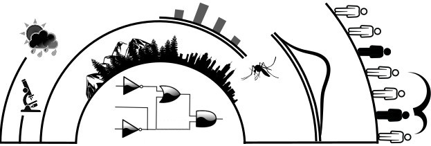

This is the standalone Julia library of the dynamically-structured matrix population model sPop2. This version implements both age-dependent and accumulative processes.
Just type this in Julia:
using Pkg
Pkg.add("sPop2")The following creates a pseudo-structured population with 10 individuals and iterates it one step with 0 mortality and an Erlang-distributed development time of 20±5 steps.
pop = Population(PopDataSto())
AddProcess(pop, AccErlang())
AddPop(pop, 10)
pr = (devmn=20.0, devsd=5.0)
size, completed, poptabledone = StepPop(pop, pr)See section Usage examples for further examples.